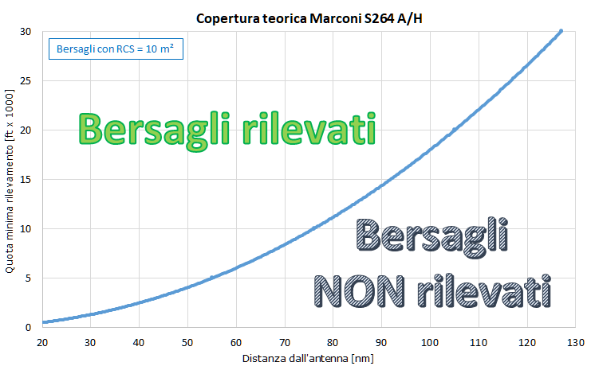
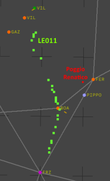
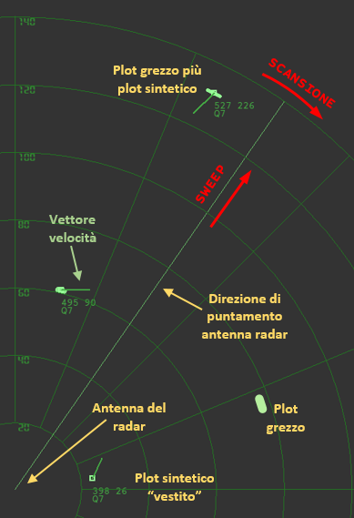
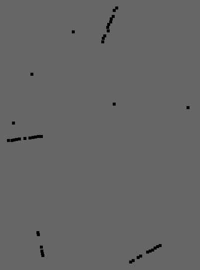
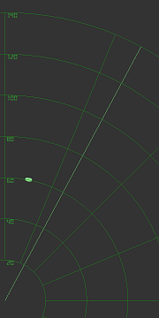
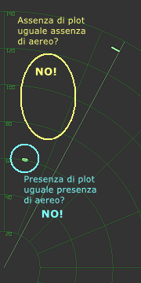
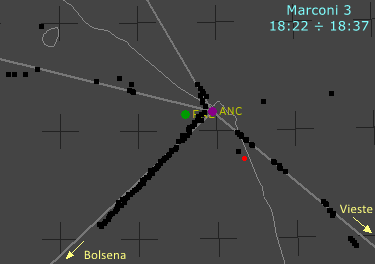
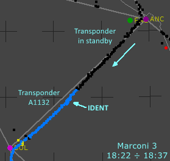
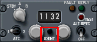

In questa pagina si cercherà di chiarire quali sono le informazioni ricavabili da un radar di sorveglianza primario.
Ciò sarà fatto simulando un tipico schermo degli apparati usati dalla D.A. italiana all'epoca della strage, omettendo di visualizzare tutta la simbologia aggiuntiva relativa allo spazio aereo, irrilevante in questo contesto.
La decisione di affrontare gli argomenti qui esposti tramite l'utilizzo di simulazioni (che, sebbene semplici nella forma, sono piuttosto complesse nella sostanza) è dovuta alla notevole confusione diffusamente presente quando si parla di aerei non identificati o comunque di aerei associati, più o meno arbitrariamente, a plot di solo primario.
Le informazioni riportate in questa pagina dovrebbero aiutare a capire il criterio da usare per distinguere i falsi plot dai plot che potrebbero essere associati ad un velivolo.
La comprensione di questo criterio di discernimento è necessaria per avere ben chiari:
il funzionamento del radar primario;
il significato della presenza di un plot in un tabulato;
il significato dell'assenza di plot in una data area.
Nota bene
Tutte le considerazioni fatte in questa pagina si riferiscono (se non diversamente specificato) alla disponibilità del solo radar primario; vengono, cioè, ignorate le informazioni eventualmente ottenute dal radar secondario e dalle comunicazioni T/B/T (tra gli enti di controllo del T.A. e gli equipaggi).
Il fine è proprio quello di cercare di far luce sulla notevole confusione che esiste quando si parla di velivoli associati ai plot ricevuti dal solo radar primario.
INDICE
Documenti di riferimento
Gran parte delle informazioni qui riportate riguardanti il particolare funzionamento dei radar della catena NADGE sono state tratte principalmente dalle seguenti fonti:
avvocato di parte lesa Miggiano, il quale ha svolto una notevole opera di raccolta informazioni (v.
"WP000942_007.DOC"
fonte);
Fagiani Antonio, analista programmatore presso la Brigata Tecnica Addestrativa della D.A. di Borgo Piave (v.
"WP002136_001.DOC"
fonte);
Sebbene gli scritti dell'avv. Miggiano siano stati pesantemente contestati da Di Natale (v. il succitato "Capitolo XXII - Consulenza tecnica Di Natale-Torri - 15.02.91" dell'Ordinanza-Sentenza), gli argomenti che interessano questo contesto riguardano soltanto i principi di base del sistema NADGE, che non sono stati oggetto di contestazione.
Infine, dettagli ampiamente sufficienti per comprendere il funzionamento di base di un radar primario sono presenti nella pagina "RADAR e SIF"; tuttavia, alcuni di quei concetti saranno ripresi in questa pagina per calarli specificatamente nell'oggetto di questa trattazione.
Rilevamento dei bersagli
Il radar primario viene usato per rilevare velivoli all’interno di un ampio volume di spazio aereo sfruttando un principio banale: il radar emette periodicamente (centinaia di volte al secondo) un impulso elettromagnetico di brevissima durata ma di notevole potenza; se c’è un oggetto che riflette l’impulso, il radar potrebbe rilevare il segnale riflesso, se di sufficiente potenza, e quindi rileva un potenziale velivolo, altrimenti non rileva niente.
Tuttavia, un principio di funzionamento così banale non è esente da problemi. Infatti, l'antenna del radar, come qualunque altra antenna, rileva qualunque campo elettromagnetico, sia esso generato dal radar stesso (tramite la riflessione dell'impulso trasmesso), sia esso generato da disturbi atmosferici o da altri trasmettitori o interferenze di altra natura. È ciò che talvolta capita quando si ascolta la radio o quando si segue una trasmissione televisiva e la ricezione viene disturbata da difetti nell'audio o nell'immagine a causa d'interferenze o disturbi di varia natura.
Se tali disturbi rientrano nella fascia di frequenze per cui l'antenna è progettata e se hanno sufficiente potenza, la circuiteria del radar li tratta come un normale riflesso dell'impulso, facendo comparire sullo schermo un oggetto che in realtà non esiste, cioè si crea un falso plot.
Per limitare la comparsa di falsi plot, l'elettronica di base viene integrata con tutta una serie di filtri attivi e passivi che riescono a ridurre notevolmente la presenza di disturbi e falsi plot. Tuttavia, gli apparati usati all'epoca della strage non erano dotati di filtri efficaci in tutte le situazioni, per cui era richiesto anche l'intervento degli operatori sulla console per limitare i fastidi creati dai fenomeni indesiderati (clutter).
La potenzialità del radar di rilevare un bersaglio è "spiegata" dal diagramma teorico di copertura verticale, come mostrato nel seguente esempio (presente anche nella pagina "I radar «vedono» tutto").
Il diagramma è teorico perché è valido per ben precisi parametri ambientali e di funzionamento del radar; al variare di questi parametri varia anche la copertura.
Per sapere cosa ci dice il diagramma non serve alcuna particolare competenza, basta saper leggere un grafico che lega la quota (asse verticale) alla distanza dal radar (asse orizzontale).
La nota in basso a sinistra è importante poiché fissa alcuni parametri di riferimento, il più importante dei quali è la "dimensione" del bersaglio, cioè la RCS (v. radartutorial.eu), in quanto consente di stabilire la copertura nominale del radar per un oggetto avente RCS pari a 10 m2 (circa equivalente a quella del DC-9 Itavia).
E’ evidente che un oggetto più "grande", cioè con una RCS maggiore di 10 m2, potrà essere rilevato a distanza maggiore e/o a quota inferiore, a parità di tutto il resto, poiché riflette una quantità di segnale maggiore.
Per quanto appena detto, quindi, dal diagramma risulta che un oggetto potrebbe non essere rilevato da un radar primario se troppo piccolo e/o troppo basso in rapporto alla distanza dal radar.
Il diagramma riporta la linea con elevazione nulla, evidenziata in viola; questo è l’orizzonte radar, che è la linea al di sotto della quale non c’è segnale. Ciò implica che qualunque cosa presente al di sotto di quella linea è impossibile da rilevare, proprio perché un oggetto non può riflettere alcun segnale, dal momento che non c'è segnale (in realtà ci possono essere deboli fenomeni di diffrazione che diffondono una piccola parte dell'impulso sotto l'orizzonte, ma il segnale riflesso è praticamente cancellato dal rumore di fondo).
Quindi, ai due motivi di prima aggiungiamo che un oggetto certamente non viene rilevato se si trova al di sotto dell’orizzonte radar qualunque sia la RCS e a qualunque distanza si trovi dal radar.
Un'altra linea importante è quella rossa. A sinistra di quella linea, il radar potrebbe non rilevare un oggetto. Valgono gli stessi criteri enunciati per un oggetto troppo basso e/o troppo piccolo. Cioè se un oggetto è troppo all'interno del cono e/o è troppo piccolo il radar non lo rileva.
La parte inferiore del diagramma di copertura può essere riportata su di un grafico per avere una lettura più immediata della quota minima teorica di copertura del radar.

Il grafico mostra la quota minima teorica di copertura per il radar Marconi S264 A/H, installato a Fiumicino all'epoca della strage.
I valori si possono facilmente ricavare dal diagramma presente nell'ultima pagina del file "Marconi Radar - Type S264 Series" (curva "FLAT SITE") e si riferiscono a bersagli con RCS pari a 10 m2.
Al di sotto della curva blu il campo elettromagnetico irradiato dall'antenna ha un'intensità troppo bassa per consentire al radar di rilevare il segnale riflesso da un bersaglio con RCS pari a 10 m2. Viceversa, al di sopra della curva blu l'intensità è più che sufficiente per rilevare bersagli con quella RCS, tanto che il radar potrebbe rilevare bersagli ben più piccoli di un DC-9 (come, ad esempio, un caccia). Allo stesso modo, bersagli più grandi o piccoli aerei in formazione stretta potrebbero essere rilevati anche non troppo al di sotto della curva blu.
Tutto ciò è valido anche in presenza del fenomeno della superrifrazione (v. radartutorial.eu), che fa curvare il campo elettromagnetico verso il basso, con la conseguenza che in presenza di tale fenomeno la curva blu si deforma abbassandosi.
Il diagramma di copertura non ha altre informazioni da fornire in merito al potere di rilevare un bersaglio, ma dalla già citata pagina "I radar «vedono» tutto" sappiamo che un bersaglio potrebbe non essere rilevato anche per altri motivi.
Simulazione radar primario
Nel sito sono presenti molte cartine e animazioni raffiguranti i plot registrati nei vari tabulati radar.

Qui vediamo l'esempio della traccia LE011 rilevata dal centro radar NADGE di Poggio Renatico.
I quadratini verdi rappresentano i plot ricevuti dal radar primario di Poggio Renatico e appaiono sullo schermo radar come piccoli archetti che si spostano ad ogni giro d'antenna lungo la rotta seguita dall'aereo.
Questa sequenza di plot viene considerata una traccia, cioè rappresenta un velivolo, poiché le sue caratteristiche cinematiche sono compatibili con quelle di un velivolo.
Tramite una simulazione vedremo come viene visualizzata una traccia sullo schermo radar, ma prima è necessario descrivere brevemente la simbologia usata nella simulazione.

Gli elementi visualizzati nella simulazione sono molti di meno rispetto a quelli presenti in uno schermo reale; lo scopo è evitare di confondere la simbologia rilevante in questo contesto con elementi del tutto superflui.
Per maggiore chiarezza, la simulazione mostra solo il 1° quadrante, cioè quello che va da nord (0 gradi) a est (90 gradi).
L'antenna si trova in basso a sinistra e ruota nel senso indicato dalla freccia della scansione, cioè in senso orario.
Lo sweep indica l'azimut verso il quale è puntata l'antenna in un dato istante e rappresenta il verso in cui si propaga il campo elettromagnetico trasmesso dall'antenna.
I plot grezzi sono rappresentati dagli archetti che compaiono in corrispondenza dello sweep e il loro "spessore" (estensione in senso radiale) è tanto maggiore quanto maggiore è la potenza del segnale riflesso (che è grosso modo proporzionale alla grandezza del velivolo). Questi plot si affievoliscono fino a scomparire in un tempo che dipende dalla persistenza del fosforo dello schermo.
I plot sintetici vengono creati dall'operatore e/o dal computer di tracciamento in corrispondenza di un plot grezzo associabile ad un velivolo. Essi sono rappresentati da un simbolo che definisce il tipo di bersaglio (amico, ostile, neutro, sconosciuto), da una linea per il vettore velocità e da un'etichetta con i dati di traccia. Un plot sintetico così visualizzato viene chiamato "plot vestito".
I dati di traccia che si possono visualizzare sono molti e l'operatore può scegliere quali visualizzare nell'etichetta associata ai plot "vestiti". Nella simulazione viene visualizzato: nome della traccia o NTN (non presente in quest'immagine d'esempio), velocità in DM/h, rotta e qualità del plot (v. "Qualità dei plot → NADGE").
Senza avere la pretesa dell'assoluta fedeltà, segue la simulazione di un radar della D.A. la cui antenna compie 1 giro in 10 secondi (normalmente questo valore era compreso tra 10 e 12) e il cui fascio è ampio 1,3° (con riferimento al radar AN/FPS-88).
Come detto ad inizio pagina, lo schermo è estremamente "pulito", cioè non è presente tutta la simbologia relativa allo spazio aereo (irrilevante in questo contesto). È, invece, presente quel quadrilatero che simula una NAI, che è un'area definita dall'operatore all'interno della quale l'inizializzazione automatica è inibita, cioè i plot all'interno di quell'area vengono ignorati dal computer di tracciamento. Ciò significa che per far nascere una traccia da quei plot deve essere l'operatore a dare il comando (manuale) d'inizializzazione di traccia.
Il radar inizia a ricevere alcuni plot sui quali non si può fare alcuna ipotesi: possono essere falsi plot o aerei. Questi plot vengono comunque memorizzati dal computer di tracciamento, poiché a lui è demandato l'onere di verificare, durante i giri d'antenna successivi, se i nuovi plot siano correlabili con quelli ricevuti durante le scansioni precedenti e se tale correlazione sia compatibile con il moto di un velivolo.
Si nota che in alcune zone compare sempre un plot, mentre in altre la comparsa è discontinua.
Dopo 4 giri d'antenna, il computer di tracciamento inizia a "vestire" un plot grezzo, cioè crea il primo plot sintetico, corredato dai dati della traccia. Si nota il simbolo di traccia unknown e la corrispondente sigla "AA" per l'NTN di traccia pending (in attesa di identificazione).
Durante i giri successivi vengono create anche le altre tracce, non generate tutte insieme perché i plot vengono ricevuti in modo discontinuo, quindi il computer non ha dati sufficienti per completare la correlazione iniziale dei plot grezzi.
I plot all'interno della NAI, pur comparendo con sufficiente regolarità, non vengono mai inizializzati dal computer e quindi la traccia non viene mai creata; ciò implica che quell'aereo (se di aereo si tratta) non viene registrato su nastro.
La simulazione evidenzia che i plot sintetici vengono sempre tenuti "vivi" dal computer di tracciamento; cioè, oltre ad essere sempre presenti sullo schermo, essi vengono anche aggiornati periodicamente, pur in assenza della ricezione del plot grezzo.
Dopo altri giri d'antenna, l'operatore inizia ad essere in grado d'identificare i plot, non certo col solo utilizzo del radar primario, ma grazie all'aiuto del radar secondario (qui non considerato) e al possesso dei piani di volo dei vari aerei. L'identificazione è evidenziata cambiando simbolo in friendly e assegnando "LL" all'NTN (simulando il centro radar di Poggio Ballone).
Si nota un breve ritardo tra la comparsa di un plot grezzo e il posizionamento del sintetico sopra al grezzo. Ciò simula il tempo impiegato dal computer di tracciamento per fare tutti i calcoli necessari a correlare il nuovo grezzo ad una traccia preesistente.
Il programma che genera la simulazione usa un temporizzatore per introdurre (artificiosamente) un ritardo così macroscopico, poiché per impiegare tutto quel tempo per i calcoli dovrebbero essere simulati milioni di aerei, ma i computer dell'epoca richiedevano alcuni decimi di secondo per eseguire i calcoli di tracciamento.
Al progredire della simulazione, si nota che a volte le tracce scadono di qualità, a causa della mancata ricezione del grezzo. In particolare, l'aereo AA247, pur essendo molto vicino al radar viene ricevuto in modo molto discontinuo, ciò significa che l'aereo è molto piccolo e/o si trova a quota molto bassa, tanto che la qualità scade fino ad arrivare a 2 (fatto che determina l'accensione della spia rossa low quality sulla console del tracciatore capo).

Lo scenario visto nella simulazione può essere "riassunto" da questa mappa, che è simile a tutte le altre mostrate in questo sito, dove i quadratini neri rappresentano i plot grezzi, sia quelli iniziali (non vestiti) che quelli associati successivamente ai plot sintetici.
È bene sottolineare che la mappa riporta tutti i plot comparsi sullo schermo radar, ma nel caso in cui la mappa fosse il risultato della riduzione dati di un nastro radar della D.A., i plot sarebbero molti di meno, poiché sarebbero assenti tutti i plot non vestiti e altri plot vestiti ma non registrati, in accordo all'impostazione che veniva selezionata tramite un arcaico sistema a schede perforate, con il quale si stabiliva una data frequenza di registrazione su nastro. Questa frequenza, comunque, variava in modo imprevedibile con il carico di lavoro del computer (ad esempio a causa dell'inserimento o cancellazione delle tracce).
Da questa mappa è facile distinguere i falsi plot dai plot associabili ad aerei, ma ciò può essere fatto solo dopo aver ricevuto un numero sufficiente di plot. Tuttavia, disponendo del solo radar primario è indispensabile sottolineare che l'associazione dei plot ad un aereo può essere fatta solo a livello probabilistico, cioè non esiste mai la certezza che una serie di plot grezzi rappresentino un aereo.
È anche vero che un'analisi statistica sulla probabilità di ricevere falsi plot con un dato apparato radar consente di aumentare esponenzialmente la confidenza nell'affermare che una data sequenza di plot possa rappresentare un aereo. Infatti, sapendo (a seguito di un'analisi statistica) che un dato radar genera mediamente un certo numero di falsi plot ad ogni giro d'antenna, all'aumentare del numero di plot associabili ad un aereo, la probabilità che quei plot siano falsi plot diminuisce drasticamente, arrivando, in pratica, ad avere quasi la certezza che una sequenza di plot rappresenta proprio un aereo già dopo alcuni giri d'antenna. Non a caso il sistema NADGE attende alcuni giri d'antenna prima di stabilire se una serie di plot possa rappresentare effettivamente un aereo.
Per capire meglio questo fatto, consideriamo che la presenza di un plot sullo schermo non associabile ad altri plot può rappresentare indifferentemente un aereo o un falso plot.
Se un nuovo plot correla con quello del giro d'antenna precedente, cioè se i due plot sono compatibili con il movimento di un velivolo, la probabilità che quei due plot possano rappresentare un velivolo aumenta, ma siamo ancora ben lontani dal poter affermare che quello sia proprio un velivolo.
Se un terzo plot si aggiunge ai due precedenti, la probabilità che siano tutti falsi plot inizia ad essere troppo bassa per essere significativa, ma uno di quei tre plot potrebbe essere un falso plot con probabilità ancora significativa.
Andando avanti con altri plot che correlano con i precedenti, la probabilità che ci siano molti falsi plot tra quelli che sembrerebbero rappresentare una traccia inizia ad essere molto bassa, aumenta, quindi, la probabilità che quella serie di plot formi effettivamente una traccia, cioè che rappresenti un velivolo. È ovvio che maggiore è il numero di plot correlanti, maggiore è la probabilità che essi rappresentino un velivolo; è, quindi, vero che la certezza non l'avremo mai, ma è anche vero che all'aumentare dei plot correlanti, la probabilità che essi non rappresentino un velivolo diventa praticamente insignificante.
Nel caso di plot sparpagliati, le considerazioni da fare sono completamente diverse. Cioè la presenza di quei cinque plot singoli non consente di affermare assolutamente niente, poiché essi potrebbero essere falsi plot o aerei rilevati in modo molto discontinuo (ad esempio perché a bassa quota).
Dalla simulazione dello schermo radar si può ottenere anche la simulazione della registrazione dei plot su nastro.
Q
U
E A
N L
T I
TRACK R T
UTIME NUMBR Y X COORD Y COORD SPEED HEADNG Y
00:00:307 AA122 40 +15.254 +59.375 428.88 82.210 7
00:00:410 AA131 12 +58.614 +114.21 497.90 204.45 7
00:00:510 AA131 12 +58.073 +112.94 496.99 202.93 7
00:00:583 AA131 12 +57.679 +112.02 497.00 202.93 7
00:01:097 LL131 12 +57.060 +110.58 493.44 206.15 7
00:01:144 LL122 40 +20.131 +59.987 437.34 82.591 6
00:01:210 LL131 12 +56.450 +109.15 500.74 198.77 7
00:01:308 LL122 40 +22.716 +60.311 445.36 82.845 7
00:01:409 LL122 40 +23.961 +60.467 441.10 82.682 7
00:01:476 AA247 62 +26.237 +11.041 348.91 348.21 2
00:01:519 AA247 62 +25.158 +15.968 348.14 347.85 7
00:02:010 LL131 12 +54.286 +104.09 496.75 201.19 7
Questa è una versione ridotta della THR ottenuta dalla registrazione di alcuni plot vestiti, simulando la cadenza di registrazione di 1 plot sintetico ogni 4. Nella realtà, la cadenza di registrazione poteva essere molto bassa, arrivando ad 1 plot ogni 30. Ciò consentiva di ridurre il consumo dei nastri di registrazione.
Lo schema ricalca quello dei tabulati di Marsala, con la differenza che in questo esempio compaiono solo le colonne che ha senso riportare.
Si nota la cadenza variabile con la quale i plot sono stati registrati, proprio come accade esaminando i tabulati reali.
Prima di terminare il paragrafo, conviene ritornare sul discorso della presenza di plot singoli, affrontando anche il problema dell'assenza di plot di una data zona.


Qui vediamo due immagini con lo sweep nella stessa posizione.
Nell'immagine a sinistra si vede la presenza di un solo plot grezzo, mentre al giro d'antenna successivo, l'immagine di destra mostra che viene rilevato anche un secondo plot grezzo e ci si pone le due domande alle quali è facilissimo rispondere:
D: l'assenza di plot in una data zona implica la certezza dell'assenza di aerei?
R: no!
D: la presenza di un plot implica la certezza della presenza di un aereo?
R: no!
Perché il secondo plot non era visibile durante la precedente scansione? È un aereo troppo piccolo o troppo basso? Ma, soprattutto, sono veramente due velivoli o sono falsi plot? Nessuno può rispondere!
Come si può affermare che alcuni plot sparpagliati rappresentano aerei non identificati?
Identificazione dei velivoli
Abbiamo appurato che il radar primario non consente in alcun modo d'identificare i velivoli e in molte circostanze non consente nemmeno di avere una sufficiente sicurezza che i plot rappresentino effettivamente un velivolo.
Lo scopo di questo paragrafo è spiegare come avviene l'identificazione dei velivoli, rendendo ancor più evidente (se possibile) che il radar primario non può essere usato per identificare i velivoli.
I soggetti interessati in modo continuativo all'identificazione dei velivoli in volo sono gli enti di controllo del T.A. (civile), gli enti di controllo del traffico aereo militare e i centri radar della D.A.
Lo scopo dell'identificazione per i primi due enti è lo stesso, in quanto i controllori che vi fanno parte devono garantire principalmente la sicurezza del traffico aereo sotto il loro controllo, con la differenza che i controllori del T.A. (civile) si occupano dei velivoli civili e di quelli militari non operativi (cioè che seguono le stesse regole stabilite per i velivoli civili), mentre i controllori del traffico militare si occupano dei velivoli militari in missione operativa o d'addestramento.
Totalmente diverso è lo scopo dell'identificazione per i controllori dei centri radar della D.A.; essi, infatti, non si occupano della sicurezza dei velivoli, ma devono garantire la sicurezza nazionale, cioè si devono accertare che un velivolo non costituisca un potenziale pericolo per tutto ciò che si trova all'interno dello spazio aereo nazionale, a partire dal livello del suolo.
L'identificazione dei velivoli è di gran lunga più semplice per i controllori del T.A. (sia civile che militare), dal momento che i piloti (civili e militari) sono collaborativi, cioè sono loro stessi (e nel loro interesse) a fare tutto ciò che serve per farsi identificare con certezza e tempestivamente dai controllori. Ciò, evidentemente, non accade quando un aereo ostile penetra lo spazio aereo nemico, poiché il pilota farà di tutto per restare nascosto e ritardare il più possibile la sua identificazione.
Vediamo quali strumenti sono a disposizione dei controllori appartenenti ai tre tipi di enti citati, partendo proprio dall'oggetto di questa pagina: il radar primario.

La cartina mostra i plot ricevuti dal radar Marconi (solo dal radar primario) nell'intervallo di tempo indicato. Ciò significa che il controllore, ad ogni giro d'antenna, vede comparire un archetto in corrispondenza dei quadratini neri ricevuti durante quel giro d'antenna, come abbiamo visto nella simulazione.
Il radar Marconi era utilizzato dai controllori del T.A. sia civile (Roma Radar) che militare (Roma Military), ma l'esempio è valido anche per un controllore della D.A. (ad esempio del centro radar di Potenza Picena, indicato con il puntino rosso), che vede sullo schermo una sequenza di archetti generati dal radar di Potenza Picena del tutto simili a quelli visualizzati dal Marconi.
Il controllore riconoscerà certamente una traccia (cioè un velivolo) composta dalla sequenza di plot che compaiono progressivamente da Ancona spostandosi verso Bolsena, ma avrà qualche dubbio per i plot che compaiono a sud-est di Ancona, pur comparendo all'interno dell'aerovia B-23 (tratto Ancona-Vieste). Il dubbio, tuttavia, si andrà attenuando a mano a mano che il controllore osserva il movimento degli archetti ad ogni giro d'antenna.
Certamente, invece, il controllore non sarà in grado di riconoscere alcun velivolo negli altri plot sparpagliati qua e là.
Con le sole informazioni ottenute dal radar primario, i controllori che seguono il velivolo da Ancona a Bolsena non hanno idea di chi possa essere; possono stimarne la velocità stabilendo che è un aereo a jet che mantiene una velocità compatibile con quella di un aereo di linea e che probabilmente trattasi di un aereo di linea, dal momento che vola in aerovia, ma un bombardiere ostile è in grado di comportarsi in modo identico.
Nella stima della velocità e direzione delle tracce, il controllore riceve un notevole aiuto dal computer di tracciamento, che elabora i plot in uscita dall'estrattore (quindi già trasformati in informazione digitale) e che cerca di "capire" se i plot che si susseguono sullo schermo sono compatibili con un velivolo.
Questo computer ha un ruolo fondamentale nel calcolo della velocità e rotta delle tracce, ma è prezioso anche per generare automaticamente una traccia da una serie di plot (siano essi di solo primario, di solo secondario o di primario e secondario combinati) e, soprattutto, per aggiornare automaticamente il progredire della traccia.
È chiaro che in mancanza di questo computer l'operatore sarebbe soggetto ad un immane carico di lavoro, dal momento che toccherebbe a lui fare tutte le considerazioni sulla natura dei plot, eventualmente associandoli a velivoli.
Nell'ambito della D.A., il computer di tracciamento attende almeno 4 giri d'antenna (circa 40/50 secondi) prima di associare i plot ad un velivolo.
A prescindere dall'utilizzo del computer di tracciamento, risulta evidente che il solo radar primario non può essere di alcun aiuto ad un controllore della D.A., poiché non è possibile stabilire in alcun modo l'identità dei velivoli (bisognerebbe far partire un'intercettazione per ogni traccia generata).
Grazie alla disponibilità del piano di volo, posseduto sia dagli enti del T.A. che della D.A., ma soprattutto grazie alle comunicazioni T/B/T tra i piloti e gli enti di controllo del T.A., i controllori interessati al volo che va da Ancona a Bolsena sanno perfettamente che quello è il volo ATI BM300 da Trieste a Fiumicino.
Un contributo impareggiabile nell'identificazione dei velivoli viene dato dal radar di sorveglianza secondario, come evidenziato nella seguente cartina, che mostra i plot ricevuti sia dal primario che dal secondario.

Ad un certo punto, la traccia da nera diventa blu, ad indicare che il transponder dell'aereo non è più in standby (plot neri), poiché il copilota ha inserito il codice 1132 nel pannellino del transponder, su richiesta del controllore di Roma Radar. Da questo momento, l'identificazione del volo BM300 è immediata e senza possibilità d'errore.

Ma non basta, perché qualche decina di secondi dopo, lo stesso controllore chiede al BM300 di squoccare IDENT; richiesta che il copilota soddisfa premendo l'apposito pulsantino; così facendo, il simbolo dell'aereo sullo schermo assume una forma caratteristica e appare più luminoso, permettendo al controllore di avere l'assoluta certezza che l'aereo è proprio quello.
Anche i controllori della D.A. vedono nei loro schermi il codice 1132 (di modo 3/A) e lo squoc dell'IDENT.
L'identificazione dei velivoli militari in missione operativa o in addestramento avviene in modo del tutto analogo, con la differenza che essi vengono presi in carico dai controllori che gestiscono il traffico militare operativo e le comunicazioni T/B/T avvengono nella banda UHF.
Il grande problema del radar secondario è che la sua utilità è vincolata alla collaborazione dei piloti, che devono abilitare il transponder inserendo i codici comunicati dai controllori; se il transponder viene lasciato inoperativo, il radar secondario non serve assolutamente a niente.
In conclusione, dunque, l'identificazione dei velivoli avviene grazie alla disponibilità dei radar (primario e/o secondario) con la contemporanea disponibilità delle informazioni sul velivolo (piani di volo e T/B/T). Quando tutto ciò non è disponibile, è necessario ricorrere all'intercettazione.
 Il diagramma è teorico perché è valido per ben precisi parametri ambientali e di funzionamento del radar; al variare di questi parametri varia anche la copertura.
Il diagramma è teorico perché è valido per ben precisi parametri ambientali e di funzionamento del radar; al variare di questi parametri varia anche la copertura.